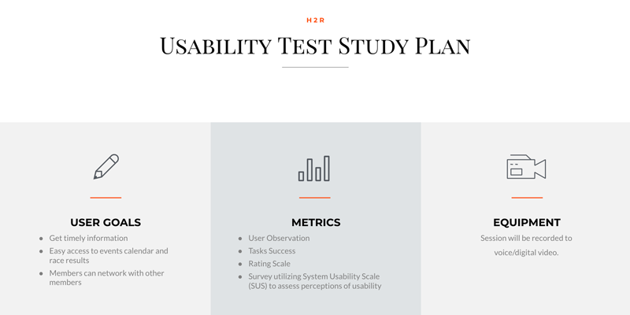
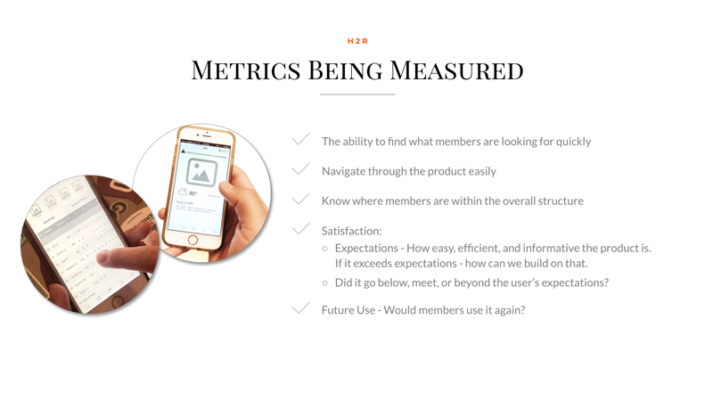
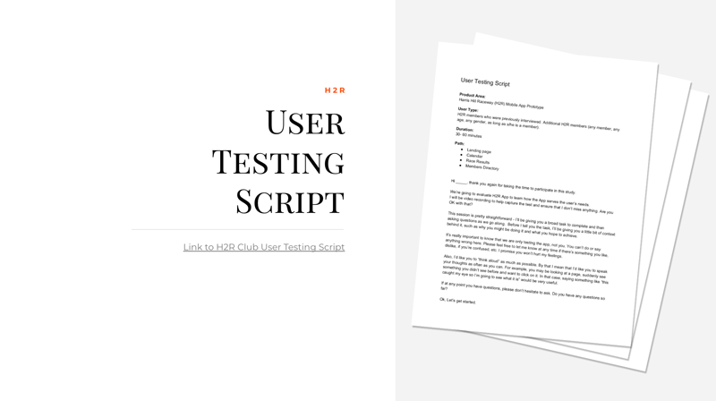

H2R Usability Testing Case Study
A usability testing case study showing the process of testing the mobile app on users.
I developed a Usability Testing Study Plan to define User Goals, Metrics, and Equipments. Creating a Study Plan helped create User Testing Script and performing usability testing.
Below are a few screen shots from my case study.
  